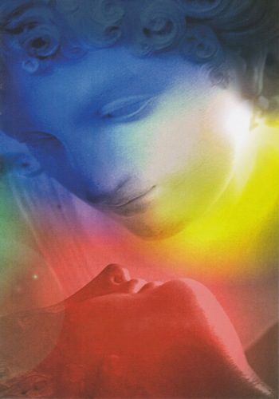

Seelenreise nach Dr. Michael Newton & Ursula Demarmels
Diese Spirituelle Rückführung befasst sich mit einer wirkungsvollen Methode, die tief in unserem Unterbewusstsein verborgenes Wissen hervorruft. Es zeigt die große therapeutische Bedeutung der Entschlüsselung von heiligen Weisheiten auf, wie sie uns durch die Hypnose und die Rückführungstherapie möglich wird. (Dr. Michael Newton: „Erinnerung aus dem Zwischenreich“)
Durch die Erfahrung einer Rückführung in Vor- und Zwischenleben können die Klienten auf vielen Ebenen Heilung erfahren und ein tieferes Verständnis erlangen. Die Rückführung ins Zwischenleben lässt uns auf einer tieferen Ebene all die unbewussten Barrieren erkennen, die uns davon abhalten, ein glückliches und von unserer Seele geleitetes Leben zu führen.
Es ist eine Therapie, die uns aus dem Schleier des Vergessens herausführt. Sie führt uns über die Alterregression in ein wichtiges Vorleben für dieses Leben. Von dort aus geht die erhabene Reise ins Zwischenreich, wo wir unseren Seelenführer, unsere Seelengruppe begegnen. Hier können die bedeutungsvollen Fragen gestellt werden, die unser jetziges Leben betreffen, wie zum Beispiel:
Es ist eine einzigartige Gelegenheit dem großen Ganzen zu dienen.
Ich möchte meine Erfahrung aus vielen Rückführungs- und LZL- Sitzungen mit Ihnen teilen. Sie ist ein Beispiel für den positiven Wandel, den unsere Leben erfährt, wenn wir den Zielen unserer Seele folgen.
Dr. Michael Newton entwickelte diese Methode in vielen Jahrzehnten und schrieb die Bücher:
Er gründete das Newton Institute for Life Between Lives Hypnotherapy, New York
Ursula Demarmels, bekannteste Rückführungsexpertin im deutschsprachigen Raum, von Dr. Newton ausgebildet und Beauftragte zur Fortbildung der Newton-Therapie.